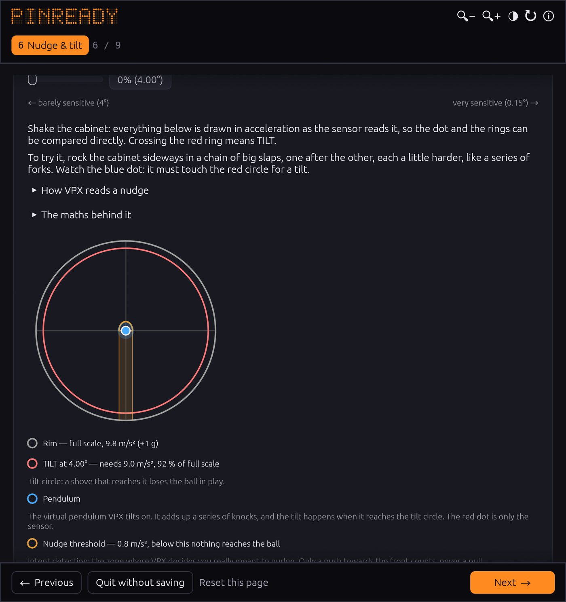

La procedura guidata
La prima volta che avvii PinReady, una procedura guidata ti accompagna attraverso nove pagine. Ogni opzione ha un piccolo segnalino informativo: passaci sopra il mouse, oppure toccalo su un cabinet, per una spiegazione in parole semplici.
Le tue risposte vengono scritte in VPinballX.ini, il file delle impostazioni di Visual Pinball, e i commenti di quel file vengono conservati. Se il file non esiste ancora, PinReady fa prima creare a Visual Pinball il suo file predefinito completo, poi vi aggiunge le tue scelte. Puoi riaprire la procedura guidata in qualsiasi momento dal pulsante Configurazione del launcher o con pinready --config: ogni campo mostra le tue impostazioni attuali. La maggior parte delle impostazioni si può anche cambiare mentre si gioca, dal menu di Visual Pinball con F12.
Azzera la configurazione scarta ogni risposta, mette da parte il VPinballX.ini globale come VPinballX.ini.reset-backup e ricomincia dalla prima pagina. I tuoi tavoli non vengono toccati.
1. Schermi

La prima pagina mostra il sistema rilevato (per esempio Ubuntu 24.04 LTS · X11 · GNOME) così che le segnalazioni di bug riportino sempre il loro contesto, ti lascia scegliere la lingua dell'interfaccia e installa Visual Pinball se serve.
- Numero di schermi: 1 per un computer da scrivania, 3 o 4 per un pincab completo (playfield, backglass, DMD e un topper facoltativo).
- Ruoli: ogni monitor è elencato con nome, risoluzione, frequenza di aggiornamento (Hz) e dimensioni fisiche. PinReady suggerisce un ruolo in base alle dimensioni degli schermi: il più grande diventa il playfield, poi il backglass, il DMD e il topper. Cambia qualsiasi ruolo dal suo elenco, oppure imposta uno schermo su Non usato.
- Modalità di visualizzazione: Desktop (in finestra, per un computer normale), Cabinet (il playfield disegnato per uno schermo disteso in orizzontale, con backglass e DMD sui loro schermi) o Schermo singolo completo (playfield e backglass su un unico schermo alto). Passa a Cabinet quando hai 2 o più schermi, e puoi comunque cambiarla.
- DMD esterno (ZeDMD, PinDMD…): spuntalo se hai un display del punteggio fisico; Visual Pinball lo rileva quando parte un tavolo.
- Disattiva lo schermo tattile: spegne la sovrapposizione touch di VPX, utile quando il playfield non è uno schermo tattile o quando controlli il cabinet da remoto.
- Dimensioni del cabinet: larghezza e altezza della lockbar, inclinazione del playfield, la tua altezza e dove ti metti. Trascina le maniglie sul disegno oppure digita i valori; danno alla vista 3D la prospettiva giusta.
2. Immagine

Impostazioni grafiche per il playfield. Il consiglio della pagina: parti dai valori predefiniti, poi adattali al tuo computer.
- Sincronizzazione: Nessuna sincronizzazione, Sincronizzazione verticale, Sincronizzazione adattiva o Frame pacing, il valore predefinito di Visual Pinball. Ogni scelta spiega il suo compromesso tra fluidità e ritardo dei comandi.
- Limite di FPS: Max per impostazione predefinita, che segue la frequenza di aggiornamento dello schermo del playfield, così nessun fotogramma viene disegnato più in fretta di quanto lo schermo possa mostrarlo. Premi Scegli un numero per impostare un tuo limite. Se il tuo schermo può fare di più di quanto indica la pagina, imposta prima la sua frequenza di aggiornamento nelle impostazioni dello schermo del sistema (PinReady non può cambiarla), poi torna qui.
- Comprimi le texture (attivo per impostazione predefinita) impacchetta le immagini del tavolo per usare meno memoria grafica, al prezzo di un primo caricamento di ogni tavolo un po' più lungo.
- Qualità dell'immagine: supersampling, MSAA, anti-aliasing in post-elaborazione (FXAA e altri), nitidezza, riflessi e dimensione massima delle texture.
- Mostra gli FPS (attivo per impostazione predefinita) mostra un contatore di fotogrammi in gioco, comodo per verificare le impostazioni subito dopo la configurazione.
- Palla rotonda (attivo per impostazione predefinita) evita che la palla sembri leggermente a forma di uovo quando si muove veloce. Solo estetico.
- Effetti visivi: ombre morbide (ambient occlusion), alone attorno alle luci intense, sfocatura di movimento della palla, texture più nitide di sbieco, riflessi dell'intero tavolo, fotogrammi pre-calcolati e fluidità di palla e rampe. Ognuno mostra il valore consigliato; se un gioco scatta, disattiva per primi quelli in fondo all'elenco.
3. 3D

Due blocchi facoltativi, entrambi disattivati per impostazione predefinita perché un cabinet non ne ha bisogno.
- Realtà virtuale (VR): gioca con un visore. Servono un visore e un programma VR (un runtime OpenXR come SteamVR o Monado) in esecuzione sul computer. Una volta attivata, scegli quando parte la VR, la frequenza di aggiornamento del visore, cosa mostra intanto il desktop e l'instradamento dell'audio.
- 3D stereoscopico: un'immagine 3D per una televisione 3D o per gli occhiali. Una volta attivato, scegli il formato 3D e regoli la separazione degli occhi, la luminosità e la saturazione dei colori.
4. Comandi

Ogni azione di Visual Pinball ha due colonne, Tastiera e Joystick, che funzionano affiancate. Fai clic su Assegna e premi un tasto o un pulsante: un tasto riempie la colonna della tastiera, un pulsante del joystick quella del joystick. Assegna tutti i comandi passa in rassegna ogni azione in un colpo solo. Le azioni essenziali (flipper, MagnaSave, start, credito, lancio della palla…) sono mostrate per prime; quelle avanzate sono a un clic di distanza. PinReady ti avvisa quando un tasto è già usato da un'altra azione.
Schede di controllo per flipper. Quando viene rilevata una scheda Pinscape KL25Z, Pinscape Pico, DudesCab o PinOne, PinReady sceglie il profilo corrispondente e riempie la colonna del joystick con la disposizione dei pulsanti di fabbrica della scheda; Visual Pinball gestisce poi da solo il plunger e il nudge dell'accelerometro. Scegli Nessuno per assegnare tu ogni pulsante. Anche un gamepad rilevato può essere usato per i flipper, il plunger e il nudge.
KL25Z (KL Shield V5.1 / Brain / Rig Master)
| Pulsante | Etichetta sulla scheda | Azione VPX |
|---|---|---|
| 0 | START | Start |
| 1 | EXTRA-B | ExtraBall |
| 2 | COIN1 | Credit1 |
| 3 | COIN2 | Credit2 |
| 4 | L BALL | LaunchBall |
| 5 | EXIT | ExitGame |
| 7 | L FLIPP | LeftFlipper + LeftStagedFlipper |
| 8 | R FLIPP | RightFlipper + RightStagedFlipper |
| 9 | L MAGNA | LeftMagna |
| 10 | R MAGNA | RightMagna |
| 11 | FIRE | Lockbar |
| 13 | DOOR | CoinDoor |
| 14 | SERVICE EXIT | Service1 |
| 15 | SERVICE - | Service2 |
| 16 | SERVICE + | Service3 |
| 17 | ENTER | Service4 |
| 19 | VOL- | VolumeDown |
| 20 | VOL+ | VolumeUp |
Pinscape Pico (OpenPinballDevice)
| Pulsante | Etichetta sulla scheda | Azione VPX |
|---|---|---|
| 0 | Start | Start |
| 1 | Exit | ExitGame |
| 2 | Extra Ball | ExtraBall |
| 3 | Coin 1 | Credit1 |
| 4 | Coin 2 | Credit2 |
| 5 | Coin 3 | Credit3 |
| 6 | Coin 4 | Credit4 |
| 7 | Launch Ball | LaunchBall |
| 8 | Fire | Lockbar |
| 9 | Left Flipper | LeftFlipper |
| 10 | Right Flipper | RightFlipper |
| 11 | Upper Left Flipper | LeftStagedFlipper |
| 12 | Upper Right Flipper | RightStagedFlipper |
| 13 | MagnaSave Left | LeftMagna |
| 14 | MagnaSave Right | RightMagna |
| 16 | Slam Tilt | SlamTilt |
| 17 | Coin Door | CoinDoor |
| 18 | Service Cancel | Service1 |
| 19 | Service Down | Service2 |
| 20 | Service Up | Service3 |
| 21 | Service Enter | Service4 |
| 22 | Left Nudge | LeftNudge |
| 23 | Forward Nudge | CenterNudge |
| 24 | Right Nudge | RightNudge |
| 25 | Volume Up | VolumeUp |
| 26 | Volume Down | VolumeDown |
DudesCab (Arnoz)
| Pulsante | Etichetta sulla scheda | Azione VPX |
|---|---|---|
| 0 | Start | Start |
| 1 | ExtraBall | ExtraBall |
| 2 | Coin1 | Credit1 |
| 3 | Coin2 | Credit2 |
| 4 | LaunchBall | LaunchBall |
| 5 | Return | ExitGame |
| 7 | Flipper Left | LeftFlipper + LeftStagedFlipper |
| 8 | Flipper Right | RightFlipper + RightStagedFlipper |
| 9 | Magna Left | LeftMagna |
| 10 | Magna Right | RightMagna |
| 12 | Fire | Lockbar |
| 13 | Door | CoinDoor |
| 14 | ROM Exit | Service1 |
| 15 | ROM - | Service2 |
| 16 | ROM + | Service3 |
| 17 | ROM Enter | Service4 |
| 18 | VOL - | VolumeDown |
| 19 | VOL + | VolumeUp |
CSD PinOne
| Pulsante | Etichetta sulla scheda | Azione VPX |
|---|---|---|
| 0 | VPX 1 | RightFlipper |
| 1 | VPX 2 | RightMagna |
| 2 | VPX 3 | LeftFlipper |
| 3 | VPX 4 | LeftMagna |
| 4 | VPX 5 | ExtraBall |
| 5 | VPX 6 | Start |
| 6 | VPX 7 | Credit1 |
| 7 | VPX 8 | ExitGame |
| 8 | VPX 9 | Lockbar |
| 15 | VPX 16 | VolumeUp |
| 16 | VPX 17 | VolumeDown |
| 17 | VPX 18 | CoinDoor |
| 18 | VPX 19 | Service1 |
| 19 | VPX 20 | Service2 |
| 20 | VPX 21 | Service3 |
| 21 | VPX 22 | Service4 |
| 23 | VPX 24 | LaunchBall |
I numeri dei pulsanti sono quelli riportati da SDL, contati a partire da 0. I pulsanti che un profilo lascia non assegnati non sono elencati.
5. Accessori

Effetti DOF (luci e giocattoli)
VPX 10.8.1 standalone include il DOF (Direct Output Framework), che pilota i solenoidi, le luci, il motore shaker, il knocker o la sirena di un cabinet. Gli serve solo una configurazione che descriva il tuo hardware. La pagina ti guida passo passo:
- Crea un account gratuito su VPUniverse ConfigTool.
- Crea un tavolo che corrisponda al tuo cabinet, aggiungi il suo sistema di uscita (Pinscape, LedWiz, PinOne, DudesCab, PacLed, TeensyStripController…) e collega i tuoi dispositivi alle uscite.
- Fai clic su Generate, scarica lo zip ed estrailo nella cartella di destinazione: il pulsante Apri la cartella nel gestore file ti ci porta.
- Attiva il DOF: Visual Pinball viene fornito con tutti i plugin disattivati, quindi in gioco non si accende nulla finché non lo fai.
PinReady può anche cercare la tua scheda di uscita tramite USB e dirti quale tipo di controller scegliere nel ConfigTool. Su Linux mostra, copia o installa le regole udev che danno accesso alla scheda. Un tester delle uscite che attiva a turno ogni uscita, con un arresto di sicurezza integrato, per ora funziona solo su un simulatore.
Head tracking
Per cabinet con un Kinect o una videocamera sul backglass o sul topper: la prospettiva del tavolo segue la tua testa. Un clic scarica il plugin di head tracking e la sua demo, attiva il plugin, porta Visual Pinball nella modalità di vista Window di cui ha bisogno e apre la demo, così puoi installare i driver della videocamera e verificare di essere rilevato. Non disponibile sui Mac Intel.
6. Tilt / Nudge


Impostazioni dell'accelerometro che rileva quando scuoti (nudge) il cabinet.
- Tipo di sensore di nudge: Game Controller per la levetta di un gamepad, Intent Sensor per cabinet con una scheda accelerometro come Pinscape o DudesCab (ignora le piccole vibrazioni e trasforma una vera spinta in un nudge), Cabinet Sensor per un sensore rapido e pulito le cui letture vengono applicate così come misurate.
- Forza: quanto una scossa spinge la palla. In pratica, l'unica impostazione che vale la pena regolare.
- Zona morta: le letture minime sotto questo livello vengono ignorate, così vibrazioni e rumore del sensore non muovono la palla.
- Intervallo dell'accelerometro: un dato della tua scheda, non una preferenza. PinReady lo legge dalla scheda quando la scheda lo comunica, e ti avvisa se il valore selezionato non corrisponde.
- Soglia di TILT: quanto forte puoi dare un nudge prima che il gioco dichiari un tilt.
Scuoti il cabinet e guarda la vista in tempo reale: un punto mostra ogni scossa rispetto ad anelli per la zona morta, la soglia del nudge e il tilt; superare l'anello rosso significa TILT. PinReady conserva anche il picco misurato, ti dice quando l'angolo di tilt è fuori dalla portata del sensore e ti chiede di controllare in che verso è montata la scheda, perché una scheda girata nel verso sbagliato scambia o specchia le direzioni del nudge.
La pagina simula ciò che Visual Pinball fa con ogni nudge, con il modello di cabinet e i valori predefiniti di VPX stesso. Un punto blu mostra il pendolo virtuale: VPX dichiara il tilt in base al pendolo, che somma una serie di colpi, mentre il punto rosso è solo il sensore. Il pendolo tocca il cerchio del tilt esattamente quando VPX dichiarerebbe il tilt. Per provare, fai dondolare il cabinet di lato con una serie di grandi spinte, ciascuna un po' più forte della precedente.
Come VPX legge un nudge
- Di lato è più sensibile che avanti e indietro. VPX moltiplica la lettura laterale per 4/3, e una spinta laterale di solito è più facile da dare di una in avanti.
- Una spinta conta, una trazione mai. VPX cerca l'intenzione di spingere il cabinet lontano da te. Ciò che arriva verso di te viene azzerato, per quanto forte, quindi il cabinet che ritorna dopo la tua spinta non è mai un secondo nudge: si limita ad assestarsi. La pagina disegna questa zona verso il giocatore.
- Un colpo viene registrato solo sopra la soglia (1 m/s²). VPX costruisce allora una breve spinta di 25 ms forte quanto il picco misurato; la lettura grezza del sensore non viene più usata dopo.
- Una serie di colpi si somma nel pendolo, quindi quattro spinte di fila possono far scattare il tilt dove una sola non lo farebbe mai.
La matematica sottostante
La pagina mostra le formule calcolate da VPX, un blocco per tipo di sensore (quello selezionato è aperto), poi il modello del cabinet e il filo a piombo che condividono. Unità: m/s² per le accelerazioni, ms per i tempi, ° per l'angolo di tilt. I blocchi si trovano nell'applicazione stessa, nella pagina Nudge & tilt.
7. Audio

Visual Pinball riproduce l'audio su due dispositivi, e PinReady elenca le tue schede audio per ciascuno:
- Backglass: musica, voci e suoni generali del gioco.
- Playfield: i suoni meccanici (flipper, bumper, palla che rotola). Per il surround o l'SSF, questa deve essere l'uscita multicanale.
Modalità di uscita del playfield. PinReady preseleziona una modalità in base al numero di canali rilevati e mostra uno schema della disposizione degli altoparlanti con i collegamenti necessari.
| Modalità | Per |
|---|---|
| 2 ch — Stereo frontale | Stereo semplice, entrambi gli altoparlanti davanti al cabinet. |
| 2 ch — Stereo posteriore (lockbar) | Stereo semplice, entrambi gli altoparlanti vicino alla lockbar, vicino al giocatore. |
| 5.1 — Posteriori alla lockbar | Aggiunge il posizionamento avanti-indietro; canali posteriori alla lockbar. Richiede una scheda audio a 6 canali. |
| 5.1 — Frontali alla lockbar | Come sopra, con i canali frontali alla lockbar. Scegli quello che corrisponde ai tuoi collegamenti. |
| SSF — Laterali & posteriori alla lockbar (Legacy) | Surround Sound Feedback con il vecchio missaggio. |
| SSF — Laterali & posteriori alla lockbar (New) | Surround Sound Feedback con il missaggio più recente, consigliato. |
Collegamenti per una scheda audio 7.1, la configurazione SSF consigliata (i colori dei jack possono variare da una scheda all'altra):
| Jack | Canali | Collegamento nel cabinet |
|---|---|---|
| Verde (Front) | FL / FR | Altoparlanti del backglass (musica) o sistema 2.1 |
| Nero (Rear) | BL / BR | Eccitatori in alto sul playfield (lato backglass) |
| Grigio (Side) | SL / SR | Eccitatori in basso sul playfield (lato lockbar / giocatore) |
| Arancione (Center/Sub) | FC / LFE | Subwoofer o bass shaker (facoltativo) |
Volumi e prove. Imposta i volumi della musica e del playfield, poi controlla i collegamenti: la prova 1 riproduce in loop la musica sul backglass con un bilanciamento sinistra/destra; la prova 2 riproduce un suono su ciascun altoparlante del playfield a turno e fa scorrere una palla che rotola dall'alto al basso e da sinistra a destra. Se la palla si muove nel verso sbagliato da davanti a dietro, cambia la modalità di uscita; da sinistra a destra, controlla i collegamenti. Una scheda audio con soli 3 jack (verde, rosa, blu) spesso si può portare a 5.1 o 7.1: vedi le guide per Linux, Windows, macOS.
8. Tavoli

Scegli la cartella che contiene i tuoi tavoli, una sottocartella per tavolo: la struttura usata da Visual Pinball 10.8.1.
Tables/
└── Table Name/
├── Table Name.vpx table file (required)
├── Table Name.directb2s backglass (optional)
├── Table Name.ini per-table settings (optional)
├── Table Name.vbs script patch (optional)
├── medias/launcher.png launcher picture (optional)
├── pinmame/roms/<rom>.zip ROM (required for ROM tables)
├── altsound/<rom>/ alt-sound pack (optional)
├── pupvideos/<rom>/ PinUP Player videos (optional)
├── serum/<rom>/<rom>.crz Serum colorization (optional)
└── vni/<rom>/<rom>.vni VNI colorization, with .pal (optional)La colorazione del DMD nei formati Serum (.crz) e VNI (.vni + .pal) è supportata; i formati proprietari come .pac no.
- Porta la tua collezione nella nuova struttura. Indica a PinReady una cartella (una collezione di tavoli, una vecchia installazione di VPX, perfino un intero disco). Indicizza tutto ciò che c'è dentro, poi dà a ogni tavolo la sua cartella con la ROM, il backglass, il pacchetto PUP, l'alt-sound, la colorazione e la musica che gli appartengono. Se i tuoi tavoli hanno già una cartella ciascuno, restano dove sono e i file mancanti vengono aggiunti. Esegui prima una prova a vuoto per vedere l'anteprima, poi scegli se copiare (sicuro) o spostare i file.
- Compatibilità con Visual Pinball Standalone (disattivata per impostazione predefinita): PinReady riconosce lo script integrato in ogni tavolo e, quando Le-Syl21/vpx-standalone-scripts ha una patch per quello, mette il
.vbsmodificato accanto al.vpx. Un tuo.vbsviene conservato come<table>.pre_standalone.vbs. - Arricchimento del catalogo (attivo per impostazione predefinita): abbina ogni tavolo al Virtual Pinball Spreadsheet e scarica un'immagine del backglass e un jingle audio da VPinMediaDB nella cartella
mediasdel tavolo. La prima sincronizzazione scarica circa 7 MB di dati del catalogo, più alcuni MB per ogni tavolo abbinato. Disattivalo su un cabinet offline.
9. Sistema

Comodità facoltative, adatte soprattutto a un cabinet dedicato:
- Avvia PinReady automaticamente all'accensione.
- Scorciatoie nei menu e associazione dei file
.vpx: aggiunge PinReady e Visual Pinball al menu delle applicazioni (GNOME, KDE o XFCE su Linux, Launchpad su macOS, menu Start su Windows) e apre i file.vpxcon Visual Pinball. Togli la spunta e termina di nuovo la procedura guidata per rimuoverle. - Scorciatoia sul desktop e, su GNOME, fissa nel dock.
- Mirror personale: scarica le patch degli script e il database dei media dal tuo server invece che da GitHub.